PEB Member – Dựng cấu kiện thép tiền chế trong Tekla Structures nhanh như nhập Excel
PEB Member (gói cài đặt PEBToolsVN) là plugin miễn phí của iViDLab dành cho kỹ sư mô hình hoá và chi tiết hoá kết cấu thép nhà xưởng tiền chế. Thay vì mở hộp thoại PEB Member của Tekla rồi gõ lại hàng chục ô thông số cho từng cấu kiện, bạn quản lý toàn bộ cột, kèo, dầm của dự án trong một bảng kiểu Excel, xem trước tiết diện 3D, rồi vẽ hoặc cập nhật hàng loạt vào model chỉ với một cú nhấp.
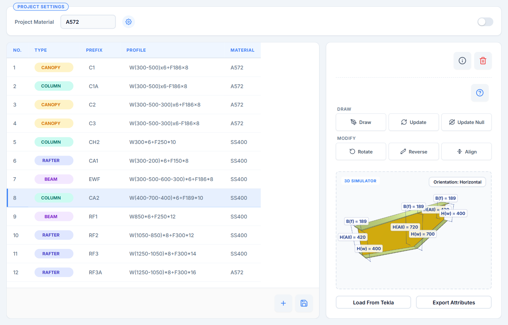
1. PEB Member là gì?
Trong Tekla Structures, các cấu kiện tổ hợp vát thuôn của nhà xưởng tiền chế — cột, kèo, dầm có chiều cao bụng thay đổi — thường được dựng bằng component PEB Member. Component này rất mạnh, nhưng mỗi lần dựng hay sửa một cấu kiện bạn phải điền tay nhiều nhóm thông số: các chiều cao bụng, bề rộng và chiều dày bản cánh, chiều dày bản bụng, vật liệu, rồi tên, prefix, class cho từng bản thép… Với dự án có hàng chục loại cột, kèo khác nhau, việc này vừa chậm, vừa dễ sai, lại khó giữ quy tắc đặt tên thống nhất giữa các thành viên trong nhóm.
PEB Member ra đời để giải quyết đúng vấn đề đó. Plugin chạy song song với Tekla, kết nối trực tiếp qua Tekla Open API và điều khiển component PEB Member gốc. Bạn chỉ cần mô tả tiết diện bằng một chuỗi ngắn gọn như W(300-500)*6+F186*8 — phần mềm tự tách thông số, dựng hình 3D để bạn kiểm tra và ghi đầy đủ thuộc tính vào model.
💡 PEB Member không thay thế component PEB Member của Tekla mà giúp bạn dùng nó nhanh và nhất quán hơn. Mọi cấu kiện tạo ra vẫn là component PEB Member tiêu chuẩn — vẫn mở và chỉnh sửa được bằng hộp thoại gốc như bình thường.
2. Điểm nổi bật
Bảng dữ liệu kiểu Excel
Sao chép, dán cả khối từ Excel, điền nhanh Ctrl+D, hoàn tác Ctrl+Z… quen thuộc như bảng tính.
Cú pháp tiết diện ngắn gọn
Một chuỗi như W(300-500-300)*6+F186*8 mô tả trọn tiết diện vát thuôn nhiều đoạn.
Xem trước 3D có kích thước
Kiểm tra hình dạng, chiều cao bụng, tổng chiều cao, bề rộng cánh ngay trước khi vẽ.
Vẽ và cập nhật hàng loạt
Vẽ bằng 2 điểm, cập nhật đồng loạt nhiều cấu kiện đang chọn; xoay, đảo chiều, căn vị trí bằng một cú nhấp.
Tên, Prefix, Class tự động
Đặt theo quy tắc chung của dự án — theo loại cấu kiện, theo chiều dày thép… thống nhất cho cả nhóm.
Lưu theo từng model
Bảng cấu kiện lưu ngay trong thư mục model Tekla, mở lại là có; xuất được file thuộc tính cho hộp thoại PEB gốc.
3. Giao diện tổng quan
Cửa sổ PEB Member gồm bốn khu vực chính:
| Khu vực | Chức năng |
|---|---|
| ① Project Settings | Ô Project Material — vật liệu dùng chung cho mọi cấu kiện; nút ⚙ mở cài đặt đặt tên; công tắc chuyển sang Lite Mode. |
| ② Bảng PEB Member | Danh sách cấu kiện gồm các cột No., Type, Prefix, Profile, Material. Dòng đang chọn là dữ liệu cho mô phỏng 3D và các lệnh Draw/Update. |
| ③ Nhóm lệnh | Draw, Update, Update Null; nhóm Modify gồm Rotate, Reverse, Align; các nút ⓘ Section Information, ? Accepted Section Formats và 🗑 Clean All Data. |
| ④ 3D Simulator | Mô phỏng tiết diện đang chọn kèm kích thước kiểu CAD; bên dưới là Load From Tekla và Export Attributes. |
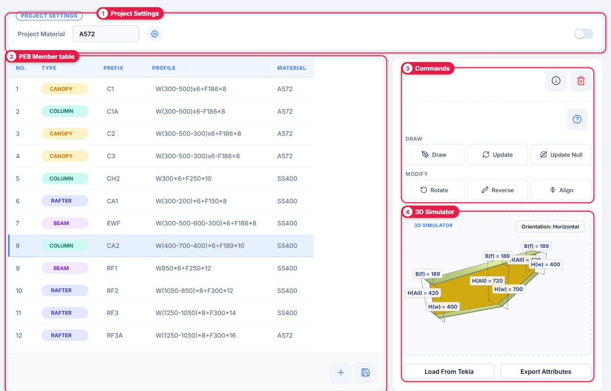
4. Chi tiết các chức năng
4.1. Bảng PEB Member thao tác như Excel
Mỗi dòng trong bảng là một loại cấu kiện của dự án. Cột Type có sẵn danh sách gợi ý — Column, Rafter, Canopy, Main Beam, Sub Beam, Jack Beam, Crane Beam, Strut, Tie, Purlin, Girt — mỗi loại được gắn một màu riêng để dễ nhận biết. Bạn có thể gõ trực tiếp, hoặc chuẩn bị danh sách trong Excel rồi dán cả khối vào bảng; bảng tự thêm dòng khi dữ liệu dán vào dài hơn số dòng hiện có.
| Phím tắt | Tác dụng |
|---|---|
| Ctrl+C / X / V | Sao chép, cắt, dán vùng ô — trao đổi qua lại với Excel, Google Sheets. |
| Ctrl+V trên vùng chọn | Dán một giá trị cho tất cả ô đang chọn. |
| Ctrl+D | Điền xuống: chép giá trị ô trên cùng xuống các ô bên dưới. |
| Ctrl+Enter | Điền giá trị ô hiện tại cho cả vùng chọn. |
| Delete | Xoá nội dung các ô đang chọn. |
| Ctrl+- | Xoá các dòng đang chọn. |
| Enter Shift+Enter ↑ ↓ | Di chuyển giữa các ô. |
| Ctrl+A | Chọn toàn bộ bảng. |
| Bấm tiêu đề cột | Chọn cả cột. |
| Ctrl+Z | Hoàn tác thao tác vừa làm. |
Nhấp chuột phải vào một dòng để Move Up / Move Down, Insert Above / Insert Below hoặc Delete Row; nút ＋ dưới bảng thêm dòng mới; nút 🗑 Clean All Data xoá toàn bộ bảng (có hộp thoại xác nhận).
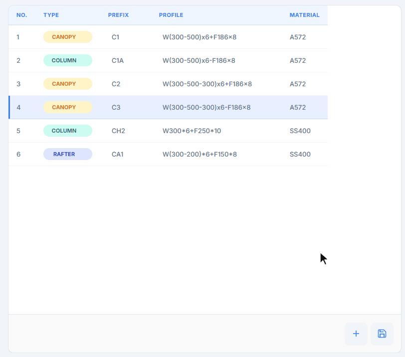
4.2. Cú pháp khai báo tiết diện
Cột Profile nhận hai kiểu viết:
- Theo chiều cao bụng:
W(hw1-hw2-…)*Tw+FB*Tf - Theo tổng chiều cao:
H(H1-H2-…)*B*Tw*Tf— phần mềm tự quy đổi về chiều cao bụng: hw = H − 2 × Tf.
| Ví dụ | Ý nghĩa |
|---|---|
W300*6+F200*8 | Tiết diện không đổi: bụng cao 300, dày 6; cánh rộng 200, dày 8. |
H300*186*6*8 | Tổng chiều cao 300, cánh rộng 186, bụng dày 6, cánh dày 8. |
W(300-500)*6+F186*8 | Bụng vát thuôn từ 300 lên 500. |
H(300-500)*186*6*8 | Tổng chiều cao thay đổi từ 300 lên 500. |
W(300-500-600-300)*6+F186*8 | Nhiều đoạn vát nối tiếp — thêm chiều cao, ngăn cách bằng dấu -. |
✅ Dấu nhân dùng * hay x đều được; dấu + hoặc - trước chữ F chỉ để dễ đọc, không ảnh hưởng kết quả. Bấm nút ? trên giao diện để xem lại bảng cú pháp; nút ⓘ Section Information cho biết loại tiết diện, các chiều cao bụng, chiều dày bụng và cánh, bề rộng cánh cùng tổng chiều cao lớn nhất của dòng đang chọn.
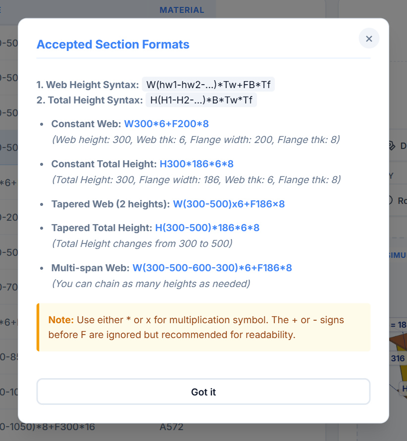
4.3. Mô phỏng 3D và kích thước kiểu CAD
Chọn một dòng, trình 3D Simulator dựng ngay khối tiết diện để bạn kiểm tra trước khi đưa vào model:
- Bản bụng dựng đúng hình thang/đa giác theo các chiều cao vát; bản cánh trên luôn phẳng, bản cánh dưới bám theo độ dốc — đúng cấu tạo cột, kèo PEB thực tế.
- Mỗi bản thép được tô màu theo chiều dày, tương ứng bảng màu Class tiêu chuẩn của Tekla — nhìn là biết tấm nào dày, tấm nào mỏng.
- Tại mỗi vị trí đổi tiết diện, kích thước kiểu CAD được vẽ tự động: chiều cao bụng
H(w), tổng chiều caoH(All)và bề rộng cánhB(f). - Nhấp vào một mặt bất kỳ để xem nhanh kích thước và chiều dày của bản thép đó.
- Xoay, thu phóng, kéo mô hình bằng chuột; nút Orientation chuyển nhanh góc nhìn giữa phương ngang và phương đứng.
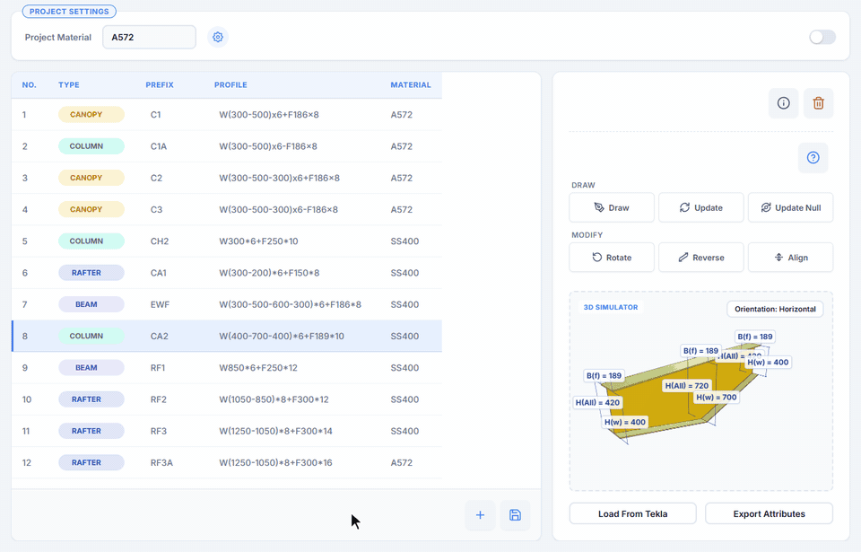
4.4. Draw — vẽ cấu kiện vào model
- Mở model trong Tekla Structures.
- Chọn dòng cấu kiện cần vẽ trong bảng PEB Member.
- Bấm Draw, sau đó chọn điểm đầu và điểm cuối của cấu kiện trong Tekla.
PEB Member chèn component PEB Member với đầy đủ thông số: chiều cao bụng, kích thước bản cánh và bản bụng, vật liệu, Prefix và tên cấu kiện (Assembly), tên – prefix – class của từng bản thép theo cài đặt dự án. Trạng thái Rotate/Reverse/Align đang bật trên giao diện cũng được áp dụng ngay khi vẽ.
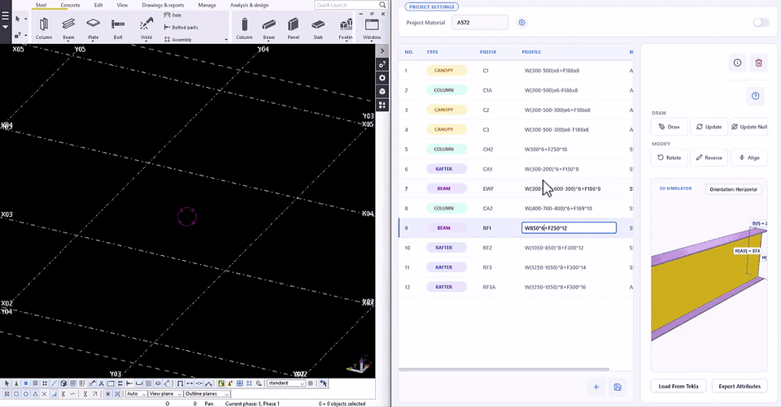
4.5. Update và Update Null — cập nhật hàng loạt
Update: chọn một hoặc nhiều cấu kiện PEB Member trong model, chọn dòng dữ liệu mới trong bảng rồi bấm Update — toàn bộ cấu kiện đang chọn được cập nhật tiết diện, vật liệu, Prefix, tên và class theo dòng đó. Rất tiện khi phải đổi đồng loạt một loại kèo sau khi thiết kế thay đổi.
Update Null: làm mới (tính lại) mọi cấu kiện PEB Member đang chọn mà không thay đổi bất kỳ thông số nào — tương tự thao tác bỏ chọn tất cả ô rồi bấm Modify trong hộp thoại PEB Member gốc, nhưng áp dụng cho nhiều cấu kiện cùng lúc.
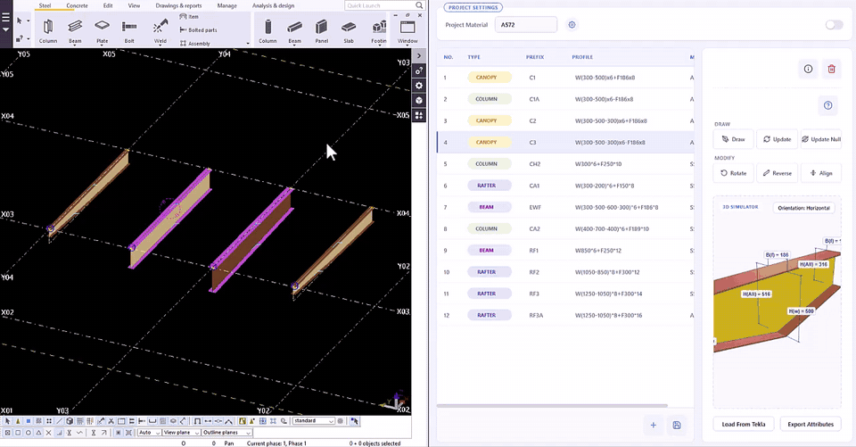
4.6. Rotate, Reverse, Align — chỉnh hướng nhanh
| Lệnh | Tác dụng |
|---|---|
| Rotate | Xoay tiết diện quanh trục cấu kiện; mỗi lần bấm chuyển sang hướng kế tiếp (4 hướng). |
| Reverse | Đảo điểm đầu và điểm cuối của cấu kiện. |
| Align | Lần lượt chuyển giữa 3 kiểu căn vị trí (Position) của cấu kiện so với đường chọn điểm. |
Lệnh áp dụng ngay cho các cấu kiện đang chọn trong Tekla, đồng thời trạng thái được ghi nhớ trên nút để tự áp dụng cho những lần Draw tiếp theo — không phải xoay lại từng cấu kiện sau khi vẽ.
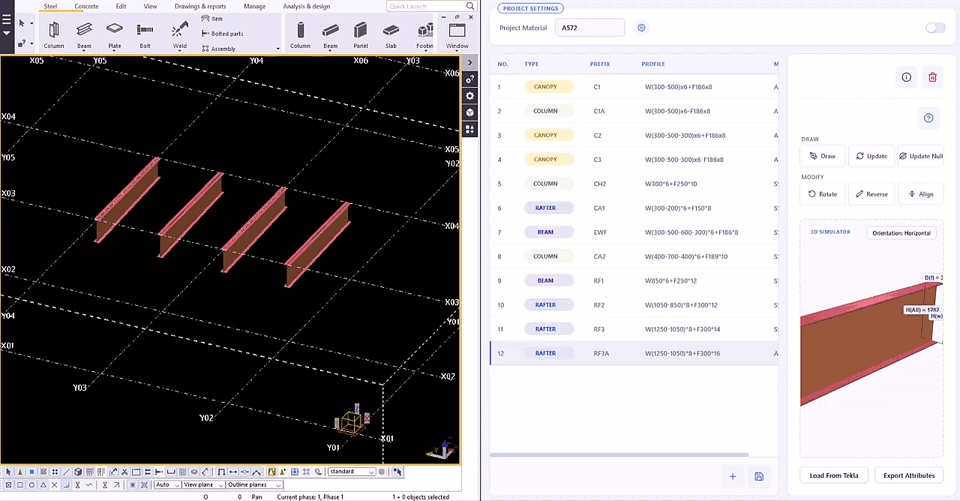
4.7. Load From Tekla — đọc ngược từ model
Cần chỉnh một cấu kiện đã có trong model? Chọn nó trong Tekla rồi bấm Load From Tekla: PEB Member đọc lại loại, Prefix, vật liệu và các kích thước của cấu kiện, chuyển thành chuỗi Profile và đưa vào bảng. Sửa ngay trên bảng, rồi dùng Update để ghi ngược lại model.

4.8. Export Attributes — xuất file thuộc tính PEB
Chọn các dòng cần xuất rồi bấm Export Attributes: mỗi dòng thành một file thuộc tính của component PEB Member (*.Tekla.Structures.Plugins.India.Member.PEB.MainForm.xml) trong thư mục attributes của model, nạp được ngay trong hộp thoại PEB Member gốc của Tekla. Nếu trong Tekla đang chọn sẵn cấu kiện PEB, lệnh sẽ xuất thuộc tính của chính các cấu kiện đó; khi chưa mở model, bạn tự chọn thư mục để lưu.
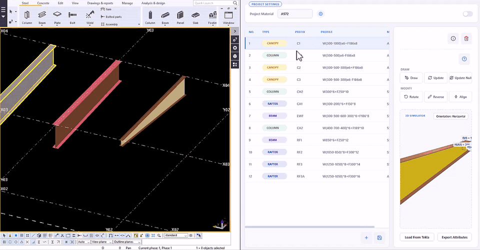
4.9. Cài đặt đặt tên, Prefix, Class
Nút ⚙ cạnh ô Project Material mở cửa sổ iViD PEB Part Settings — nơi thiết lập quy tắc đặt tên cho cả dự án:
- Name By — tên cấu kiện (Assembly) lấy theo tiết diện (Section) hoặc theo loại (Type). Danh sách loại và ghi chú đi kèm (ví dụ CỘT, KÈO) quản lý ở Manage Types….
- Part Name By — tên từng bản thép theo tên tuỳ chỉnh (FLANGE, WEB) hoặc theo tiết diện đầy đủ của cấu kiện.
- Flange / Web Name & Prefix — tên và prefix cho bản cánh, bản bụng; có thể ghép thêm chiều dày thép hoặc ghi chú của loại cấu kiện vào trước/sau, với ký tự ngăn cách tuỳ chọn và ô xem trước kết quả.
- Class By — class theo chiều dày thép, hoặc một giá trị cố định do bạn đặt.
- Plate Profile / Folded Plate Profile — tên profile tấm và tấm gấp dùng cho component PEB (Tekla 2021 trở lên).
- Save / Save As / Load — lưu nhiều bộ cài đặt để dùng lại cho các dự án, các quy chuẩn đặt tên khác nhau.
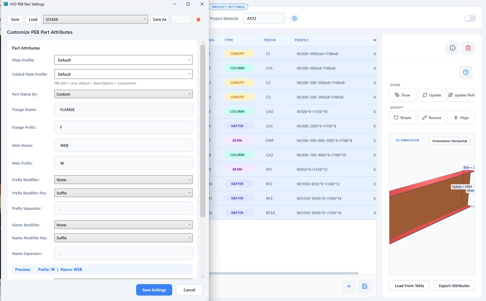
4.10. Lưu dữ liệu theo model và Lite Mode
Nút 💾 Save Data lưu toàn bộ bảng vào file PEBToolsVNSession.xml trong thư mục attributes của model đang mở. Lần sau mở PEB Member trên model đó, dữ liệu tự động được nạp lại — mỗi dự án giữ bảng cấu kiện riêng. Khi đóng cửa sổ mà còn thay đổi chưa lưu, phần mềm hỏi Save / Don't Save / Cancel; nếu không ghi được vào model (chẳng hạn Tekla đã đóng), bạn có thể lưu ra một file dự phòng.
Lite Mode thu gọn cửa sổ chỉ còn danh sách Prefix (di chuột để xem Profile) cùng các nút Draw/Modify, bỏ phần 3D — cửa sổ nhỏ gọn đặt cạnh Tekla khi cần dựng hình liên tục.
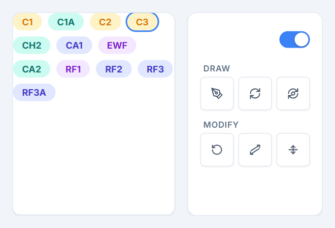
5. Yêu cầu hệ thống
- Windows 10 hoặc Windows 11 (64-bit).
- Tekla Structures 2016, 2017, 2018, 2019, 2020, 2021, 2022, 2023 hoặc 2024.
- Component PEB Member (extension PEB của Trimble) đã có trong Tekla — tìm “PEB Member” trong Applications & components để kiểm tra.
- .NET Framework 4.8 — có sẵn trên Windows 10 đã cập nhật và Windows 11.
- Microsoft Edge WebView2 Runtime — có sẵn trên hầu hết máy Windows 10/11; nếu thiếu, PEB Member sẽ hỏi và mở trang tải chính thức của Microsoft.
- Khi dùng các lệnh làm việc với model (Draw, Update, Load From Tekla…), Tekla phải đang chạy và đã mở model.
6. Cài đặt
- Ở mục Tải về cuối bài, chọn đúng phiên bản Tekla bạn đang dùng và tải gói
.tseptương ứng. - Đóng Tekla Structures (khuyến nghị).
- Nhấp đúp vào file
.tsep— cửa sổ Tekla Structures Extension Manager hiện ra: tick phiên bản Tekla cần cài rồi bấm Import. Gói được đưa vào hàng chờ và tự cài khi Tekla khởi động lần tiếp theo. - Mở Tekla, mở model, vào Applications & components, tìm
PEBToolsVNrồi nhấp đúp để chạy.
⚠️ Mỗi gói .tsep chỉ dành cho phiên bản Tekla ghi trên tên gói (ví dụ gói 2021_Higher dùng chung cho Tekla 2021 – 2024). Nếu đã cài bản PEB Member cũ, nên gỡ bản cũ trong Tekla Extension Manager trước khi cài bản mới.
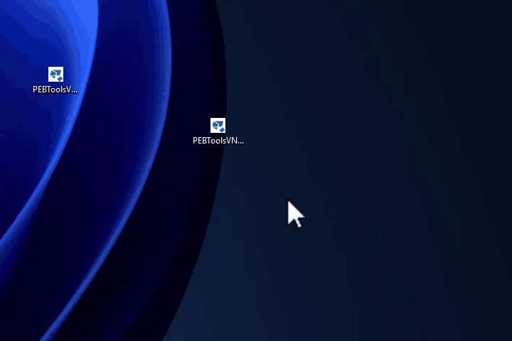
7. Kích hoạt key miễn phí
PEB Member hoàn toàn miễn phí, bạn chỉ cần kích hoạt key một lần cho mỗi máy tính:
- Chạy PEB Member lần đầu, cửa sổ PEB Tools VN - License hiện ra.
- Bấm Copy để chép Product Key (chuỗi bắt đầu bằng
PT1-). - Gửi Product Key qua Zalo 0969683188 để nhận key miễn phí.
- Dán nội dung key nhận được vào ô Active Key rồi bấm Activate.
🔒 Key được cấp theo mỗi máy, sử dụng được không cần internet. Nếu gặp sự cố vui lòng liên hệ để được hỗ trợ.

8. Câu hỏi thường gặp
PEB Member có mất phí không?
PEB Tools VN đang trong quá trình hoàn thiện và dùng thử miễn phí.
Bấm lệnh thì báo “Tekla Not Connected”?
Hãy chắc chắn Tekla Structures đang chạy và đã mở model. Nên mở PEB Member từ Applications & components của chính phiên bản Tekla đang dùng, thay vì chạy trực tiếp file .exe.
Cài xong nhưng không thấy PEBToolsVN trong Tekla?
Khởi động lại Tekla, rồi kiểm tra đã tải đúng gói cho phiên bản Tekla đang dùng — mỗi gói chỉ cài được vào phiên bản tương ứng.
Máy báo thiếu WebView2?
Chọn đồng ý để PEB Member mở trang tải Microsoft Edge WebView2 Runtime, cài đặt xong thì chạy lại phần mềm.
Dữ liệu bảng được lưu ở đâu?
Trong file attributes\PEBToolsVNSession.xml của thư mục model. Sao chép cả thư mục model là mang theo được bảng cấu kiện.
Tôi dùng Tekla 2025 trở lên thì sao?
Hiện chưa có gói cài đặt chính thức cho Tekla 2025 trở lên. Vui lòng liên hệ Zalo 0969683188 để được hỗ trợ.
PEB Member – Model pre-engineered steel members in Tekla Structures as fast as filling a spreadsheet
PEB Member (installed as the PEBToolsVN package) is a free plugin by iViDLab for engineers who model and detail pre-engineered steel buildings. Instead of opening Tekla's PEB Member dialog and retyping dozens of fields for every member, you manage all of the project's columns, rafters and beams in an Excel-like table, preview each section in 3D, then draw or batch-update them in the model with a single click.
1. What is PEB Member?
In Tekla Structures, the tapered built-up members of a pre-engineered building — columns, rafters and beams with a varying web depth — are usually modeled with the PEB Member component. It is a powerful component, but every time you create or edit a member you have to fill in many groups of parameters by hand: web depths, flange widths and thicknesses, web thickness, material, and then the name, prefix and class of every plate… On a project with dozens of column and rafter types this is slow, error-prone, and makes it hard to keep naming consistent across the team.
PEB Member was built to solve exactly that. It runs alongside Tekla, connects directly through the Tekla Open API and drives the original PEB Member component. Describe a section with a short string such as W(300-500)*6+F186*8 — the plugin parses the dimensions, builds a 3D preview for you to check, and writes every attribute into the model.
💡 PEB Member does not replace Tekla's PEB Member component — it helps you use it faster and more consistently. Every member it creates is a standard PEB Member component that you can still open and edit with the original dialog.
2. Highlights
Excel-like table
Copy, paste whole blocks from Excel, fill down with Ctrl+D, undo with Ctrl+Z… just like a spreadsheet.
Compact profile syntax
A single string such as W(300-500-300)*6+F186*8 fully describes a multi-segment tapered section.
Dimensioned 3D preview
Check the shape, web depth, total depth and flange width before you draw.
Batch draw and update
Draw with two points, update many selected members at once; rotate, reverse and align with one click.
Automatic name, prefix, class
Follow one project-wide rule — by member type, by plate thickness… — consistent for the whole team.
Saved per model
The member table is stored in the Tekla model folder and reloads automatically; export attribute files for the original PEB dialog.
3. Interface overview
The PEB Member window has four main areas:
| Area | Purpose |
|---|---|
| ① Project Settings | Project Material — the material shared by all members; the ⚙ button opens the naming settings; the switch toggles Lite Mode. |
| ② PEB Member table | The member list with No., Type, Prefix, Profile and Material columns. The selected row feeds the 3D preview and the Draw/Update commands. |
| ③ Commands | Draw, Update, Update Null; the Modify group with Rotate, Reverse, Align; plus ⓘ Section Information, ? Accepted Section Formats and 🗑 Clean All Data. |
| ④ 3D Simulator | A dimensioned 3D preview of the selected section, with Load From Tekla and Export Attributes underneath. |
4. Features in detail
4.1. An Excel-like PEB Member table
Each row in the table is one member type of your project. The Type column offers a suggestion list — Column, Rafter, Canopy, Main Beam, Sub Beam, Jack Beam, Crane Beam, Strut, Tie, Purlin, Girt — and each type gets its own color. Type directly, or prepare the list in Excel and paste the whole block; the table adds rows automatically when the pasted block is longer than the current table.
| Shortcut | Action |
|---|---|
| Ctrl+C / X / V | Copy, cut and paste cell ranges — works both ways with Excel and Google Sheets. |
| Ctrl+V on a selection | Paste one value into every selected cell. |
| Ctrl+D | Fill down: copy the top cell's value into the cells below. |
| Ctrl+Enter | Fill the whole selection with the current cell's value. |
| Delete | Clear the contents of the selected cells. |
| Ctrl+- | Delete the selected rows. |
| Enter Shift+Enter ↑ ↓ | Move between cells. |
| Ctrl+A | Select the whole table. |
| Click a column header | Select the whole column. |
| Ctrl+Z | Undo the last action. |
Right-click a row to Move Up / Move Down, Insert Above / Insert Below or Delete Row; the ＋ button under the table adds a new row; 🗑 Clean All Data clears the whole table (after a confirmation).
4.2. Profile syntax
The Profile column accepts two notations:
- By web depth:
W(hw1-hw2-…)*Tw+FB*Tf - By total depth:
H(H1-H2-…)*B*Tw*Tf— converted to web depth automatically: hw = H − 2 × Tf.
| Example | Meaning |
|---|---|
W300*6+F200*8 | Constant section: web 300 deep, 6 thick; flange 200 wide, 8 thick. |
H300*186*6*8 | Total depth 300, flange width 186, web thickness 6, flange thickness 8. |
W(300-500)*6+F186*8 | Web tapering from 300 to 500. |
H(300-500)*186*6*8 | Total depth varying from 300 to 500. |
W(300-500-600-300)*6+F186*8 | Several tapered segments in a row — add depths separated by -. |
✅ Use either * or x as the multiplication sign; a + or - before F is only for readability. Click the ? button to see the syntax table in the app; ⓘ Section Information shows the section type, web depths, web and flange thicknesses, flange width and maximum total depth of the selected row.
4.3. 3D preview and CAD-style dimensions
Select a row and the 3D Simulator immediately builds the section so you can check it before it goes into the model:
- The web is built as the exact trapezoid/polygon of its tapered depths; the top flange always stays flat and the bottom flange follows the slope — just like real PEB columns and rafters.
- Every plate is colored by thickness using Tekla's standard class colors — thick and thin plates stand out at a glance.
- At every change of section, CAD-style dimensions are drawn automatically: web depth
H(w), total depthH(All)and flange widthB(f). - Click any face to see the dimensions and thickness of that plate.
- Orbit, zoom and pan with the mouse; the Orientation button switches the view between horizontal and vertical.
4.4. Draw — place members in the model
- Open a model in Tekla Structures.
- Select the member row to draw in the PEB Member table.
- Click Draw, then pick the start point and end point of the member in Tekla.
PEB Member inserts a PEB Member component with every parameter filled in: web depths, flange and web plate sizes, material, assembly prefix and name, and each plate's name, prefix and class according to your project settings. The current Rotate/Reverse/Align state is applied right away as well.
4.5. Update and Update Null — batch updates
Update: select one or more PEB Member components in the model, pick the new data row in the table and click Update — all selected members get that row's section, material, prefix, names and classes. Perfect when a rafter type changes after a design revision.
Update Null: refreshes (recomputes) every selected PEB Member without changing a single parameter — like unchecking every field and clicking Modify in the original PEB Member dialog, but for many members at once.
4.6. Rotate, Reverse, Align — quick orientation
| Command | Action |
|---|---|
| Rotate | Rotates the section about the member axis; each click moves to the next of 4 orientations. |
| Reverse | Swaps the member's start and end points. |
| Align | Cycles through the 3 position (alignment) options relative to the picked line. |
The command applies immediately to the members selected in Tekla, and its state is remembered on the button so it is applied to your next Draw as well — no need to re-rotate every member after drawing.
4.7. Load From Tekla — read back from the model
Need to edit a member that is already in the model? Select it in Tekla and click Load From Tekla: PEB Member reads back its type, prefix, material and dimensions, converts them into a Profile string and puts it in the table. Edit it right in the table, then use Update to write it back to the model.
4.8. Export Attributes — PEB attribute files
Select the rows to export and click Export Attributes: each row becomes a PEB Member attribute file (*.Tekla.Structures.Plugins.India.Member.PEB.MainForm.xml) in the model's attributes folder, ready to load in Tekla's original PEB Member dialog. If PEB members are selected in Tekla, their own attributes are exported instead; with no model open, you choose the folder to save to.
4.9. Naming, prefix and class settings
The ⚙ button next to Project Material opens iViD PEB Part Settings, where you define the naming rules for the whole project:
- Name By — the assembly name comes from the section (Section) or the member type (Type). Types and their notes are managed in Manage Types….
- Part Name By — each plate is named with custom names (FLANGE, WEB) or with the member's full profile.
- Flange / Web Name & Prefix — names and prefixes for flange and web plates; optionally add the plate thickness or the member type's note before or after them, with a separator of your choice and a live preview.
- Class By — class by plate thickness, or a fixed value you choose.
- Plate Profile / Folded Plate Profile — the plate and folded-plate profile names used by the PEB component (Tekla 2021 and newer).
- Save / Save As / Load — keep several settings sets for different projects or naming standards.
4.10. Per-model data and Lite Mode
The 💾 Save Data button stores the whole table in PEBToolsVNSession.xml inside the attributes folder of the open model. The next time you open PEB Member on that model, the data loads automatically — every project keeps its own member table. If you close the window with unsaved changes you are asked Save / Don't Save / Cancel; if the data cannot be written to the model (for example because Tekla is already closed), you can save a backup file instead.
Lite Mode shrinks the window to a list of prefixes (hover to see the profile) plus the Draw/Modify buttons, without the 3D view — a compact window to keep next to Tekla while you model.
5. System requirements
- Windows 10 or Windows 11 (64-bit).
- Tekla Structures 2016, 2017, 2018, 2019, 2020, 2021, 2022, 2023 or 2024.
- The PEB Member component (Trimble's PEB extension) available in Tekla — search for “PEB Member” in Applications & components to check.
- .NET Framework 4.8 — included in up-to-date Windows 10 and in Windows 11.
- Microsoft Edge WebView2 Runtime — present on most Windows 10/11 PCs; if it is missing, PEB Member offers to open Microsoft's official download page.
- Tekla must be running with a model open for the model commands (Draw, Update, Load From Tekla…).
6. Installation
- In the Download section at the end of this article, select your Tekla version and download the matching
.tseppackage. - Close Tekla Structures (recommended).
- Double-click the
.tsepfile — Tekla Structures Extension Manager opens: tick the Tekla version to install into and click Import. The package is queued and installed the next time Tekla starts. - Start Tekla, open a model, go to Applications & components, search for
PEBToolsVNand double-click it to run.
⚠️ Each .tsep package is only for the Tekla version(s) in its name (for example 2021_Higher covers Tekla 2021 – 2024). If an older PEB Member version is installed, uninstall it in Tekla Extension Manager before installing the new one.
7. Free key activation
PEB Member is completely free; you only need to activate a key once per computer:
- The first time PEB Member runs, the PEB Tools VN - License window appears.
- Click Copy to copy the Product Key (a string starting with
PT1-). - Send the Product Key via Zalo 0969683188 to receive your free key.
- Paste the key you receive into the Active Key box and click Activate.
🔒 Each key is issued per computer and works without an internet connection. If you run into any problem, please contact us for support.
8. FAQ
Is PEB Member free?
PEB Tools VN is still being finalized and is free to use during the trial period.
A command says “Tekla Not Connected”?
Make sure Tekla Structures is running with a model open. Launch PEB Member from Applications & components of the Tekla version you are using rather than running the .exe file directly.
Installed, but PEBToolsVN does not show up in Tekla?
Restart Tekla, then check that you downloaded the package for the Tekla version you use — each package only installs into its matching version.
WebView2 is missing?
Accept the prompt so PEB Member opens the Microsoft Edge WebView2 Runtime download page, install it, then run the plugin again.
Where is the table data stored?
In attributes\PEBToolsVNSession.xml inside the model folder. Copy the model folder and the member table goes with it.
What about Tekla 2025 or newer?
There is no official package for Tekla 2025 or newer yet. Please contact Zalo 0969683188 for support.
9. Tải về9. Download
Chọn phiên bản Tekla Structures bạn đang dùng — nút tải sẽ tự trỏ tới đúng gói cài đặt.
Select the Tekla Structures version you use — the download button points to the matching package.
Nhận key kích hoạt miễn phíGet your free activation key
Sau khi cài đặt, nhắn Zalo 0969683188 và gửi Product Key để nhận key miễn phí.
After installing, message Zalo 0969683188 with your Product Key to receive a free key.
Chúc bạn làm việc hiệu quả với PEB Member! Mọi góp ý, báo lỗi hay đề xuất tính năng, vui lòng nhắn Zalo 0969683188. Enjoy working with PEB Member! For feedback, bug reports or feature requests, message Zalo 0969683188.